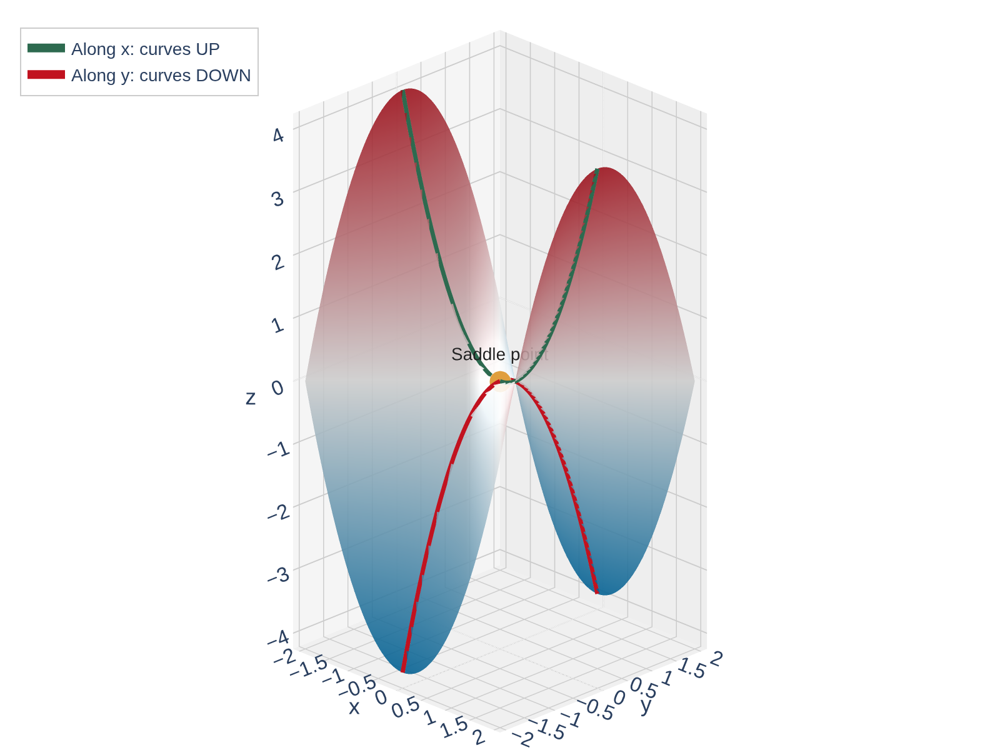
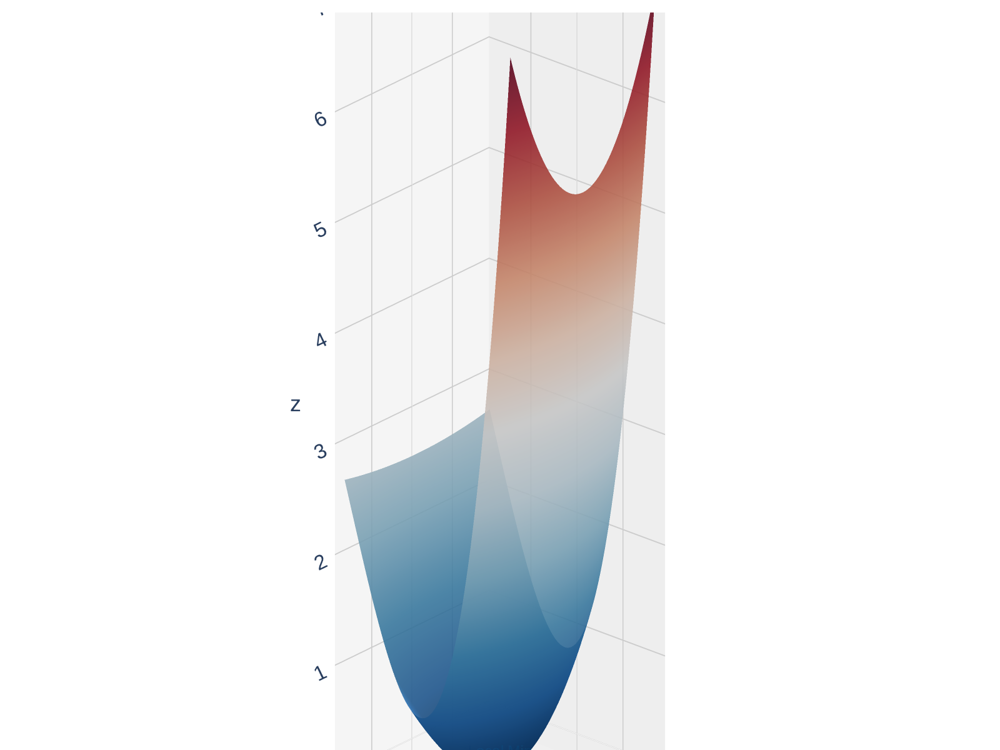
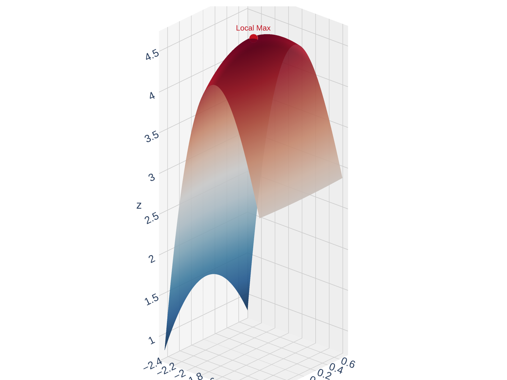
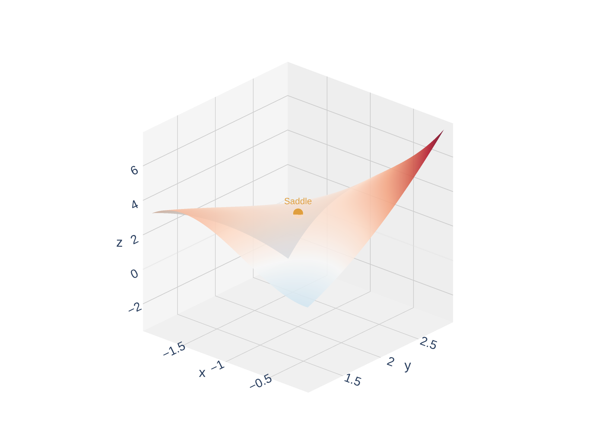
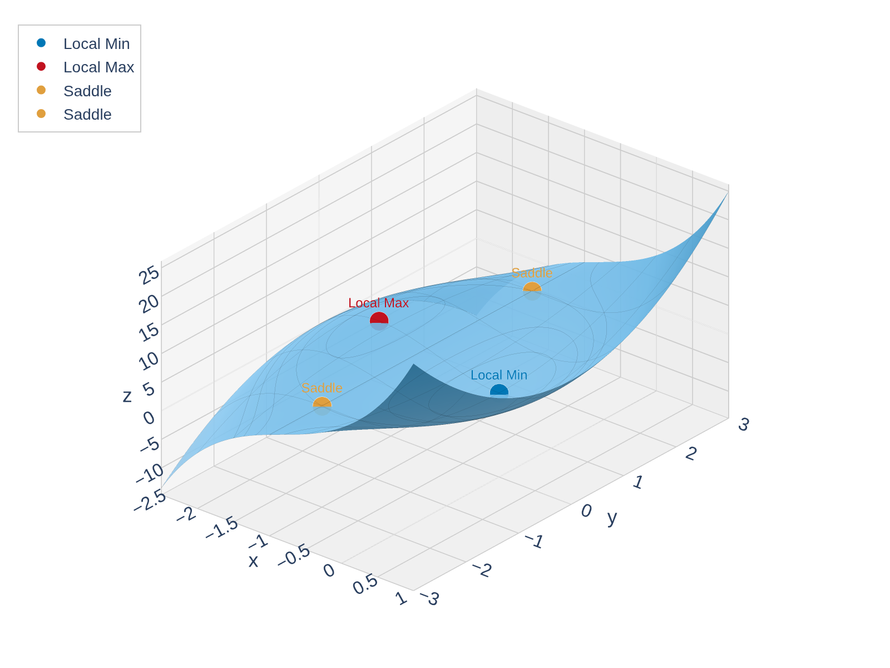
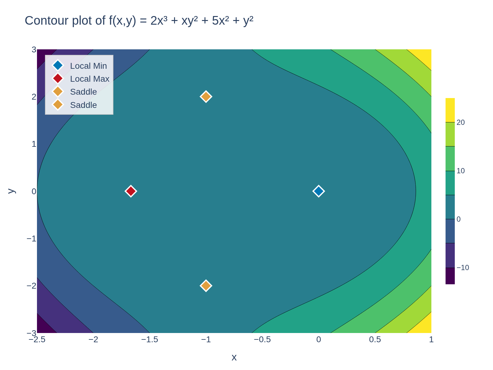
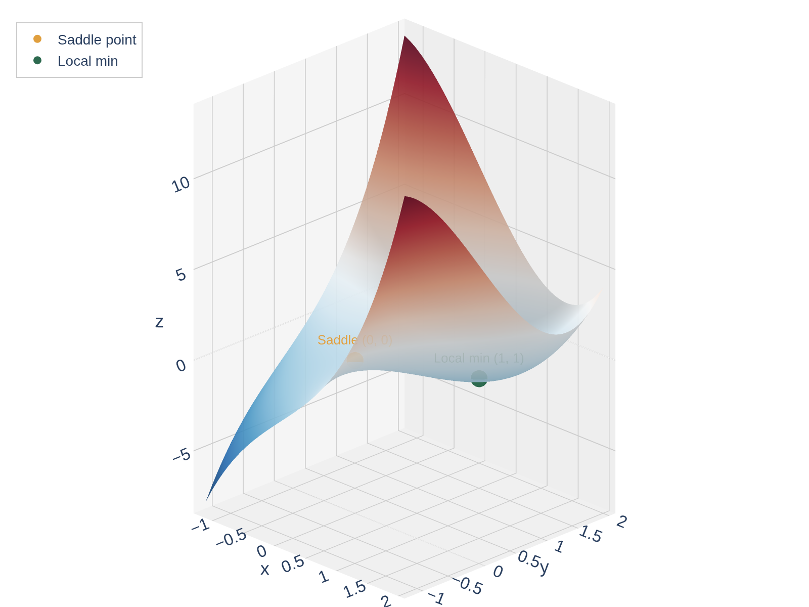

Local Extrema on Surfaces
In Calc I, a local max of \(y = f(x)\) is a ``peak'' and a local min is a ``valley.'' What does this look like for a surface \(z = f(x,y)\)?
A function \(f(x,y)\) has a local maximum at \((a,b)\) if \(f(x,y) \leq f(a,b)\) for all \((x,y)\) near \((a,b)\).
A local minimum at \((a,b)\) means \(f(x,y) \geq f(a,b)\) for all \((x,y)\) near \((a,b)\).
Can a differentiable function \(f\) have a local maximum at \((a,b)\) with \(f_x(a,b) = 3\)?
No! If \(f_x(a,b) = 3\), the surface is still rising in the \(x\)-direction — so \((a,b)\) can't be the highest point nearby. At any local extremum the tangent plane must be horizontal: both \(f_x = 0\) and \(f_y = 0\).
If \(f\) has a local extremum at \((a,b)\) and the first-order partial derivatives exist there, then
\[f_x(a,b) = 0 \quad \text{and} \quad f_y(a,b) = 0\]
OK, so both partials must be zero. But is that enough? No — a saddle point has \(f_x = 0\) and \(f_y = 0\) but is neither a max nor a min.
At a differentiable extremum, both partial derivatives must be zero — but zero partials alone aren't enough to guarantee an extremum.
Optimization: From Calc I to Calc III
In Calculus I you learned a systematic optimization procedure. Let's see what changes in Calculus III.
| Calculus I (\(y = f(x)\)) | Calculus III (\(z = f(x,y)\)) | |
|---|---|---|
| Critical points | \(f'(x) = 0\) or DNE | \(f_x = 0\) and \(f_y = 0\) (or DNE) |
| Classify | 2nd Derivative Test | 2nd Derivative Test (with \(D\)) |
| New phenomenon | — | Saddle points! |
| Absolute extrema | Check critical pts + endpoints | Check critical pts + boundary |
The big ideas carry over — but the boundary is now a curve instead of two endpoints, and saddle points are genuinely new.

Familiar: Horizontal tangent (\(f'=0\)) at each local extremum. Classify with the sign of \(f''\).

New in Calc III: At a saddle point the tangent plane is horizontal, but the surface curves up in one direction and down in another.
Calc I: The absolute max is at an endpoint, not the interior local max. Must check both!

Calc III: Same idea — but now the ``boundary'' is a curve, not just two points.
Finding Critical Points
A point \((a,b)\) is a critical point of \(f\) if:
- \(f_x(a,b) = 0\) and \(f_y(a,b) = 0\), or
- one (or both) partial derivatives do not exist there
Every local extremum occurs at a critical point — but not every critical point is an extremum!
Procedure for finding critical points:
- Compute \(f_x\) and \(f_y\)
- Set \(f_x = 0\) and \(f_y = 0\) simultaneously
- Solve the system of equations for \(x\) and \(y\)
Example: Find the Critical Points
Find the critical points of \(f(x,y) = 2x^3 + xy^2 + 5x^2 + y^2\).
Compute \(f_x\) and \(f_y\), set both equal to zero, and solve the system.
Step 1: Compute partial derivatives.
\[f_x = 6x^2 + y^2 + 10x\]
\[f_y = 2xy + 2y\]
Step 2: Set \(f_y = 0\):
\[2xy + 2y = 0\]
\[2y(x + 1) = 0\]
so \(y = 0\) or \(x = -1\).
Case 1: \(y = 0\)
\[f_x = 6x^2 + 10x = 2x(3x + 5) = 0\]
\[x = 0 \quad \text{or} \quad x = -\tfrac{5}{3}\]
Case 2: \(x = -1\)
\[f_x = 6(-1)^2 + y^2 + 10(-1) = y^2 - 4 = 0\]
\[y = \pm 2\]
Critical points:
\[(0,\, 0), \quad \left(-\tfrac{5}{3},\, 0\right), \quad (-1,\, 2), \quad (-1,\, -2)\]
The Second Derivative Test
Now that we can find critical points, how do we classify them?
Suppose the second partial derivatives of \(f\) are continuous near \((a,b)\) and \(f_x(a,b) = f_y(a,b) = 0\). Define:
\[D = D(a,b) = f_{xx}(a,b) \cdot f_{yy}(a,b) - \left[f_{xy}(a,b)\right]^2\]
| Condition | Conclusion |
|---|---|
| \(D > 0\) and \(f_{xx} > 0\) | Local minimum |
| \(D > 0\) and \(f_{xx} < 0\) | Local maximum |
| \(D < 0\) | Saddle point |
| \(D = 0\) | Inconclusive (test fails) |
\(D\) measures curvature agreement: \(D > 0\) means the surface
curves the same way in all directions. \(D < 0\) means \(f_{xy}\) dominates —
the surface is twisting, curving up in one direction and down in another.
The Second Derivative Test
Zoomed views of \(f(x,y) = 2x^3 + xy^2 + 5x^2 + y^2\) near each type of critical point — rotate to explore!

\(D > 0\), \(f_{xx} > 0\) \(\Rightarrow\) Local min

\(D > 0\), \(f_{xx} < 0\) \(\Rightarrow\) Local max

\(D < 0\) \(\Rightarrow\) Saddle point
Quick Check: Use the Second Derivative Test
You've found a critical point and computed:
\[f_{xx} = -6, \quad f_{yy} = -4, \quad f_{xy} = 1\]
Compute \(D\) and classify. Local max, local min, or saddle?
Use \(D = f_{xx} f_{yy} - (f_{xy})^2\). Check sign of \(D\) first, then \(f_{xx}\).
\(D = (-6)(-4) - (1)^2 = 24 - 1 = 23 > 0\). Since \(D > 0\), it's an extremum.
\(f_{xx} = -6 < 0\) \(\Rightarrow\) surface curves downward \(\Rightarrow\) local maximum.
Two-step classification: (1) sign of \(D\) — extremum or saddle?
(2) If \(D > 0\), sign of \(f_{xx}\) — max or min?
Caution: When \(D = 0\)
Show that \(D = 0\) at the origin for \(f(x,y) = x^4 + y^4\). Is \((0,0)\) actually an extremum?
Compute all second partials at (0,0) and find D. Then argue from the formula for f.
\(f_x = 4x^3\), \(f_y = 4y^3\) \(\Rightarrow\) \((0,0)\) is a critical point.
\(f_{xx} = 12x^2\), \(f_{yy} = 12y^2\), \(f_{xy} = 0\)
At \((0,0)\): \(D = (0)(0) - 0^2 = 0\) — test is inconclusive.
But \(f(x,y) = x^4 + y^4 \geq 0 = f(0,0)\) for all \((x,y)\), so \((0,0)\) is clearly an absolute minimum.
When \(D = 0\), you need a different argument — the test simply gives no information.
\(D = 0\) can go either way! Both surfaces below have \(D = 0\) at the origin — rotate to explore!

\(f = x^4 + y^4\): So flat that all second derivatives vanish — but still a minimum.

\(f = x^3 - 3xy^2\): A ``monkey saddle'' with three lobes — definitely not an extremum.
Example: Classify the Critical Points
Classify all critical points of \(f(x,y) = 2x^3 + xy^2 + 5x^2 + y^2\).
(We already found them: \((0,0)\), \((-\tfrac{5}{3}, 0)\), \((-1, 2)\), \((-1, -2)\).)
Compute \(f_{xx}\), \(f_{yy}\), \(f_{xy}\), then evaluate \(D\) at each critical point.
Second partials: \(f_{xx} = 12x + 10\), \(\;f_{yy} = 2x + 2\), \(\;f_{xy} = 2y\)
At \((0,0)\): \(D = (10)(2) - 0 = 20 > 0\), \(f_{xx} = 10 > 0\) \(\Rightarrow\) local min
At \((-\tfrac{5}{3}, 0)\): \(D = (-10)(-\tfrac{4}{3}) - 0 = \tfrac{40}{3} > 0\), \(f_{xx} = -10 < 0\) \(\Rightarrow\) local max
At \((-1, 2)\): \(D = (-2)(0) - 16 = -16 < 0\) \(\Rightarrow\) saddle point
At \((-1, -2)\): \(D = (-2)(0) - 16 = -16 < 0\) \(\Rightarrow\) saddle point


Your Turn: Find and Classify Critical Points
Find and classify the critical points of \(f(x,y) = x^3 - 3xy + y^3\).
Set \(f_x = 0\) and \(f_y = 0\). Express one variable in terms of the other and substitute.
\(f_x = 3x^2 - 3y = 0\) \(\Rightarrow\) \(y = x^2\)
\(f_y = -3x + 3y^2 = 0\) \(\Rightarrow\) \(x = y^2\)
Substitute \(y = x^2\) into \(x = y^2\):
\(x = (x^2)^2 = x^4\) \(\Rightarrow\) \(x^4 - x = 0\) \(\Rightarrow\) \(x(x^3 - 1) = 0\)
So \(x = 0\) (then \(y = 0\)) or \(x = 1\) (then \(y = 1\)).
Critical points: \((0,0)\) and \((1,1)\).
Classify: \(f_{xx} = 6x\), \(f_{yy} = 6y\), \(f_{xy} = -3\)
At \((0,0)\): \(D = (0)(0) - (-3)^2 = -9 < 0\) \(\Rightarrow\) saddle point
At \((1,1)\): \(D = (6)(6) - (-3)^2 = 27 > 0\), \(f_{xx} = 6 > 0\) \(\Rightarrow\) local minimum
Two critical points, different classifications. The coupled system
required substitution — watch for this pattern on homework.

The Extreme Value Theorem
Recall from Calc I: if \(f\) is continuous on \([a,b]\), then \(f\) attains an absolute max and an absolute min on \([a,b]\).
If \(f\) is continuous on a closed, bounded set \(D\) in \(\mathbb{R}^2\), then \(f\) attains an absolute maximum and an absolute minimum on \(D\).
Closed set: includes all its boundary points (like \(\leq\) vs. \(<\))
Bounded set: fits inside some large disk (not stretching to infinity)
Cautionary notes:
- Absolute extrema may occur where \(f\) is not differentiable
- Absolute extrema may occur on the boundary (not just interior critical points)
- There can be infinitely many absolute extrema
Procedure for finding absolute extrema on a closed, bounded set \(D\):
- Find all critical points of \(f\) inside \(D\)
- Find the extreme values of \(f\) on the boundary of \(D\)
- The largest value from steps 1 and 2 is the absolute max; the smallest is the absolute min
Quick Check: Why Check the Boundary?
Why can't we just find interior critical points and pick the largest value?
Where is the absolute max of \(f(x) = x^2\) on \([-1, 2]\)?
\(f'(x) = 2x = 0\) \(\Rightarrow\) \(x = 0\) (local min, \(f(0) = 0\)).
The absolute max is at the endpoint \(x = 2\): \(f(2) = 4\).
The critical point gave the minimum — the maximum is on the boundary.
Interior critical points only capture local behavior. On a closed, bounded domain, the absolute extrema can occur on the boundary — so we must check both.
Example: Absolute Extrema on a Rectangle
Find the absolute maximum and minimum values of
\[f(x,y) = x^4 + y^4 - 4xy + 2\]
on the set \(D = \{(x,y) \mid 0 \leq x \leq 3,\; 0 \leq y \leq 2\}\).
Step 1: Interior critical points. Set \(f_x = 0\) and \(f_y = 0\):
\[f_x = 4x^3 - 4y = 0 \;\Rightarrow\; y = x^3\]
\[f_y = 4y^3 - 4x = 0 \;\Rightarrow\; x = y^3\]
Substitute \(y = x^3\) into \(x = y^3\) to find the interior critical points in \(D\).
Substituting: \(x = (x^3)^3 = x^9\) \(\Rightarrow\) \(x^9 - x = 0\) \(\Rightarrow\) \(x(x^8 - 1) = 0\)
So \(x = 0\) or \(x = 1\) (taking real roots). Gives critical points \((0,0)\) and \((1,1)\).
\(f(0,0) = 2\) and \(f(1,1) = 1 + 1 - 4 + 2 = 0\)
Checking the Boundary (Continued)
Step 2: Check \(f\) on each edge of the rectangle \([0,3] \times [0,2]\).
Evaluate \(f\) on all four edges. On each edge, one variable is fixed.
Edge 1: \(y = 0\), \(0 \leq x \leq 3\)
\[f(x, 0) = x^4 + 2\]
No critical points to find (increasing on \([0,3]\)). Check endpoints:
\[f(0,0) = 2, \qquad f(3,0) = 81 + 2 = 83\]
Edge 2: \(x = 3\), \(0 \leq y \leq 2\)
\[f(3, y) = 81 + y^4 - 12y + 2 = y^4 - 12y + 83\]
Set \(\dfrac{d}{dy}f = 4y^3 - 12 = 0\) \(\Rightarrow\) \(y = \sqrt[3]{3} \approx 1.44\). Evaluate:
\[f(3,0) = 83, \qquad f(3, \sqrt[3]{3}) \approx 74.0, \qquad f(3,2) = 75\]
Edge 3: \(y = 2\), \(0 \leq x \leq 3\)
\[f(x, 2) = x^4 - 8x + 18\]
Set \(\dfrac{d}{dx}f = 4x^3 - 8 = 0\) \(\Rightarrow\) \(x = \sqrt[3]{2} \approx 1.26\). Evaluate:
\[f(0,2) = 18, \qquad f(\sqrt[3]{2},2) \approx 11.97, \qquad f(3,2) = 75\]
Your Turn: Check Edge 4 (\(x = 0\), \(0 \leq y \leq 2\))
yourself before looking ahead — it's the simplest one!
Edge 4: \(x = 0\), \(0 \leq y \leq 2\)
\[f(0, y) = y^4 + 2\]
No critical points (increasing on \([0,2]\)). Check endpoints:
\[f(0,0) = 2, \qquad f(0,2) = 18\]
Checking the Boundary (Continued)
Step 3: Compare all values:
| Point | \(f\)-value |
|---|---|
| \((1, 1)\) | \(0\) \(\leftarrow\) absolute min |
| \((0, 0)\) | \(2\) |
| \((3, 0)\) | \(83\) \(\leftarrow\) absolute max |
| \((3, 2)\) | \(75\) |
| \((3, \sqrt[3]{3})\) | \(\approx 74.0\) |
Absolute minimum is \(f(1,1) = 0\) and absolute maximum is \(f(3,0) = 83\).
![Contour plot of f = x to the fourth plus y to the fourth minus 4xy plus 2 on the rectangle D = [0,3] times [0,2]. Level curves show the absolute minimum at (1,1) in the interior (blue star, f=0) and the absolute maximum at (3,0) at a boundary corner (red star, f=83).](figures/14_7_rect_contour.png)
Application: Minimum Surface Area Box
Find the dimensions of a rectangular box with volume \(1000 \text{ cm}^3\) that has the smallest possible surface area.
Setup: Let the box have dimensions \(x\), \(y\), \(z\) (in cm).
- Constraint: \(xyz = 1000\) \(\Rightarrow\) \(z = \frac{1000}{xy}\)
- Minimize: \(S = 2xy + 2xz + 2yz\)
Substitute \(z = 1000/(xy)\) into \(S\), then find critical points.
Substituting \(z = \frac{1000}{xy}\):
\[S(x,y) = 2xy + \frac{2000}{y} + \frac{2000}{x}\]
\(S_x = 2y - \frac{2000}{x^2} = 0\) \(\Rightarrow\) \(y = \frac{1000}{x^2}\)
\(S_y = 2x - \frac{2000}{y^2} = 0\) \(\Rightarrow\) \(x = \frac{1000}{y^2}\)
Substituting the first into the second: \(x = \frac{1000 x^4}{1000000} = \frac{x^4}{1000}\)
So \(x^3 = 1000\) \(\Rightarrow\) \(x = 10\). Then \(y = 10\) and \(z = 10\).
But how do we know this is the global minimum? The domain \(x > 0\), \(y > 0\) is open and unbounded — no EVT. Instead, check the boundary behavior:
- As \(x \to 0^+\) or \(y \to 0^+\): \(\;\frac{2000}{x}\) or \(\frac{2000}{y} \to \infty\), so \(S \to \infty\)
- As \(x \to \infty\) or \(y \to \infty\): \(\;2xy \to \infty\), so \(S \to \infty\)
\(S\) blows up in every extreme direction, so a minimum must exist in the interior. There's only one critical point — it wins.
The optimal box is a \(10 \times 10 \times 10\) cube (\(S = 600\) cm\(^2\)). On open domains, verify that the function \(\to \infty\) at all edges so the lone critical point must be the global min.
Section 14.7 Summary
Set \(f_x = 0\) and \(f_y = 0\) simultaneously and solve the system.
\(D = f_{xx} f_{yy} - (f_{xy})^2\). Positive \(D\) \(\to\) extremum; negative \(D\) \(\to\) saddle.
New in multivariable: tangent plane is horizontal but the surface curves up in one direction and down in another.
On a closed bounded set: check interior critical points and the boundary. Compare all values.
Big idea: Optimization in Calc III follows the same strategy as Calc I — find critical points, classify, check boundaries — but the algebra and geometry are richer.
Homework
Section 14.7
1, 3, 5-21 odd, 25, 33, 37, 41, 43, 45, 47, 49, 51, 55